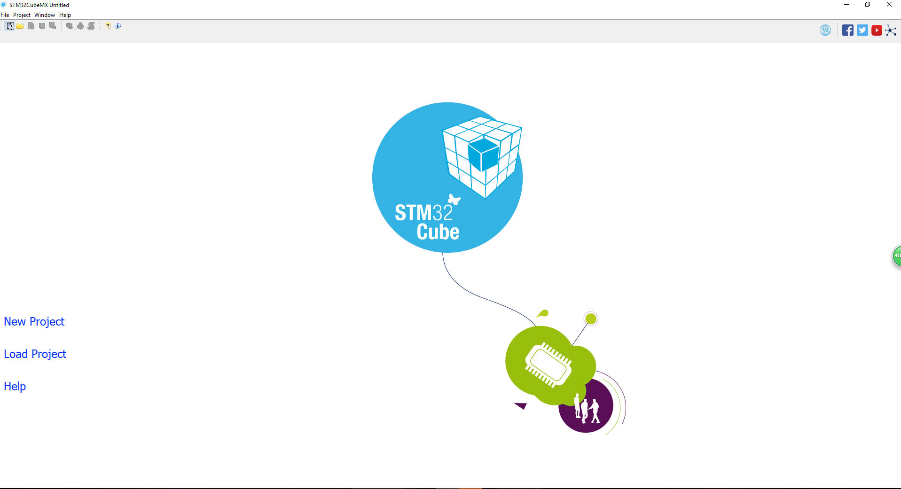
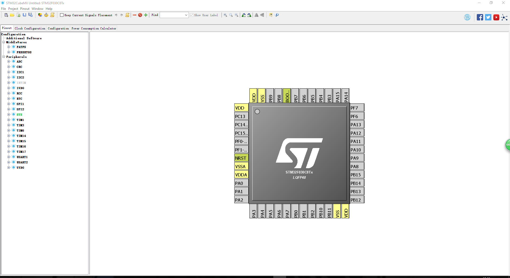

本博客仅为自己在使用时的总结，希望有所帮助
程序环境
- 系统
Windows10 1709 - 软件
stm32cubemx 4.25.0 - 编译软件
keil-mdk arm 5.24 - 语言
C语言 - 单片机
stm32f030c8t6
前言
stm32cubemx是一款对于stm32系列单片机的可视化编程配置软件，编写stm32系列几乎所有单片机的码农可以尝试这个软件，本文只是自己在使用时的总结，虽然使用的单片机为stm32f030c8t6，但是大体框架还是差不多的，基本可以通用，仅供参考。
新建工程
打开软件就看到朴实无华的界面（明明是设计太差），中间是一个stm32cube图，左侧是三个蓝色字段：New Project，Load Project，Help。不用想，直接点击New Project，新建工程。
之后会先检查网络，然后更新…
然后出现了New Project的选项卡，里面有stm32系列几乎所有芯片，并且包括报价、Flash、RAM、IO数、频率，选中一个型号还可以直接点击上方的datasheet直接下载相应datasheet来参考。选中一个型号的芯片，双击或者点选上方的start project。
出现了一个芯片的图，引脚顺序按照实际封装设置的，左侧是各种配置的外设，可以直接点选来配置，而且有相应的freeRTOS以及fatfs的支持，如果芯片支持usb还会有usb的配置选项。并且如果某个外设被配置到一个引脚，影响了其他外设，会直接在相应选项上显示红色，表示不可配置，十分友好。
新建工程到这里就结束了。
配置RCC时钟
工程新建完成后就是配置RCC时钟了，首先要确定芯片有没有外接晶振，一般开发板或者实物都会外接一个8M高速晶振。我就根据外接8M晶振来配置单片机。
首先在列表左侧将RCC下的High Speed Clock(HSE)选为Crystal/Ceramic Resonator，然后在上面大分层中的Clock Configuration页面将input frequency设置为8，将PLL Source Mux点选HSE，然后将HCLK设置为最大48MHz(也可根据自己需要设置)，回车会询问是否自动配置时钟，选择是即可自动将各种时钟配置完成。
生成代码
由于我使用的是keil mdk arm 5.24来编译和烧写stm32单片机，所以只讲如何生成keil-mdk的代码工程。
点击菜单栏的Project下的Generate Code，然后出现的配置菜单中选择Toolchain / IDE为MDK-ARM V5，然后选择好工程名字和目录，点击OK即可。一般会让你下载相应系列芯片的库，如果觉得软件下载太慢，直接去官网下载即可，然后注意修改下方的固件库目录到你下载的目录即可。
生成完成选择open project就可以打开工程进行自己的代码编写了。但是自己写的代码一定要在两个注释的中间
/* USER CODE BEGIN 2 */
/* USER CODE END 2 */
否则再次生成工程时会被洗掉。编译成功下载即可。
配置GPIO
单片机最基础的是GPIO的配置，做完GPIO的配置就可以点灯来验证程序是否运行了。GPIO分为输入和输出两个方向，分别讲解。
GPIO输出配置
GPIO的配置比较简单，直接点选芯片引脚相应的GPIO引脚，比如我手上开发板的PC13为LED，就选择PC13为GPIO_Output。
然后到大分层中的Configuration一栏中选择System下的GPIO，然后在出现的界面中选择配置的引脚，选择输出为高还是低，输出模式(push pull 和 open drain)，是否上下拉和GPIO输出速度。
点击OK即可。
GPIO输入配置
输入配置和输出类似，选择GPIO_Input，然后在选项中选择好上下拉即可。
代码控制
输出的控制函数为
HAL_GPIO_WritePin(GPIOC, GPIO_PIN_13, GPIO_PIN_SET);
读取的函数为
HAL_GPIO_ReadPin(GPIOC, GPIO_PIN_13);
可以用这两个函数控制灯的闪烁了。